Working with isometric experiments in workloopR
Vikram B. Baliga
2021-05-02
Source:vignettes/Calculating-twitch-kinetics.Rmd
Calculating-twitch-kinetics.RmdThe workloopR package also provides a function that can calculate the timing and magnitude of force during isometric experiments (twitch, tetanus) via the isometric_timing() function.
To demonstrate, we will first load workloopR and use example data provided with the package. We’ll also load a couple packages within the tidyverse as well as viridis to help with data wrangling and plotting.
Visualize
We’ll now import the twitch.ddf file included with workloopR.
## The file twitch.ddf is included and therefore can be accessed via
## system.file("subdirectory","file_name","package") . We'll then use
## read_ddf() to import it, creating an object of class "muscle_stim".
twitch_dat <-
system.file(
"extdata",
"twitch.ddf",
package = 'workloopR') %>%
read_ddf()Let’s plot Force vs. Time to visualize the time course of force development and relaxation.
twitch_dat %>%
ggplot(aes(x = Time, y = Force)) +
geom_line() +
ylab("Force (mN)") +
xlab("Time (sec)") +
theme_minimal()
This plot reveals that the final row of the data has Force = 0 and is likely an artifact. We can also see that the most salient parts of the twitch occur between ~ 0.075 and ~ 0.2 seconds.
We’ll just re-plot the salient parts of the twitch by setting new limits on the axes via ggplot2::xlim() and ggplot2::ylim(). Please note that this will not change any analyses - we are simply doing it for ease of visualizing patterns.
## Re-plot
twitch_dat %>%
ggplot(aes(x = Time, y = Force)) +
geom_line(lwd = 1) +
xlim(0.075, 0.2) +
ylim(200, 450) +
xlab("Time (sec)") +
ylab("Force (mN)") +
theme_minimal()
#> Warning: Removed 2750 row(s) containing missing values (geom_path).
Looks better!
Basics of isometric_timing()
Now we’re ready to use isometric_timing().
## Run the isometric_timing() function
twitch_analyzed <-
twitch_dat %>%
isometric_timing()
twitch_analyzed
#> file_id time_stim force_stim time_peak force_peak time_rising_10
#> 1 twitch.ddf 0.1002 224.067 0.1141 412.4495 0.1048
#> force_rising_10 time_rising_90 force_rising_90 time_relaxing_90
#> 1 244.389 0.1107 393.9015 0.1198
#> force_relaxing_90 time_relaxing_50 force_relaxing_50
#> 1 394.063 0.1311 318.2585The function returns a new data.frame that provides information about the timing and magnitude of force at various intervals within the twitch. All returned values are absolute; in other words, time is measured from the beginning of the file and forces are returned in their actual magnitudes.
The first five columns of this data.frame are fixed. They will return (in this order): 1) the ID of the file, 2) the time at which stimulation occurs, 3) magnitude of force when stimulation occurs, 4) time at which peak force occurs, and 5) magnitude of peak force.
The function also provides data that help describe the rising and the relaxation phases of the twitch at certain “set points”. By default, in the rising phase the set points are at 10% and at 90% of peak force development. Timing and force magnitudes at these points are returned as columns in the data.frame. And for the relaxation phase, the time and magnitude of force when force has relaxed to 90% and 50% of peak force are given.
The user has some flexibility in specifying how data are grabbed from the rising and falling phases. There are two arguments: rising = c() and falling = c(). Each of these arguments can be filled with a vector of any length. Within the vector, each of these “set points” must be a vector between 0 and 100, signifying the % of peak force development that is to be described.
For example, if we’d like to describe the rising phase at six points (e.g. 5%, 10%, 25%, 50%, 75%, and 95% of peak force development):
## Change rising supply a custom set of force development set points
twitch_rising_custom <-
twitch_dat %>%
isometric_timing(rising = c(5, 10, 25, 50, 75, 95))
## The returned `data.frame` contains the timing and force magnitudes
## of these set points in the "..._rising_..." columns
twitch_rising_custom
#> file_id time_stim force_stim time_peak force_peak time_rising_5
#> 1 twitch.ddf 0.1002 224.067 0.1141 412.4495 0.1044
#> force_rising_5 time_rising_10 force_rising_10 time_rising_25 force_rising_25
#> 1 234.712 0.1048 244.389 0.1057 273.743
#> time_rising_50 force_rising_50 time_rising_75 force_rising_75 time_rising_95
#> 1 0.107 321 0.1087 366.1605 0.1118
#> force_rising_95 time_relaxing_90 force_relaxing_90 time_relaxing_50
#> 1 403.579 0.1198 394.063 0.1311
#> force_relaxing_50
#> 1 318.2585Tetanus trials
The isometric_timing() function can also work on tetanus objects that have been imported via read_ddf(). Should a tetanus object be used, the set points for relaxing are automatically set to relaxing = c(), which excludes this argument from producing anything. Instead, the timing & magnitude of force at stimulation, peak force, and specified points of the rising phase are returned. The idea of ‘relaxation’ is simply ignored.
To demonstrate, we’ll use an example tetanus trial included in workloopR:
tetanus_analyzed <-
system.file(
"extdata",
"tetanus.ddf",
package = 'workloopR') %>%
read_ddf() %>%
isometric_timing(rising = c(25, 50, 75))
tetanus_analyzed
#> file_id time_stim force_stim time_peak force_peak time_rising_25
#> 1 tetanus.ddf 0.1002 141.0045 0.1364 2626.289 0.1135
#> force_rising_25 time_rising_50 force_rising_50 time_rising_75 force_rising_75
#> 1 763.4095 0.1184 1391.462 0.1236 2013.873Computing intervals
The returned data.frame provides all timing and force magnitudes in absolute terms, i.e. time since the start of the file and actual force magnitudes. Often, we’d like to report characteristics of the twitch as intervals.
To calculate, e.g. the interval between stimulation and peak force (often reported as “time to peak force”):
## Time to peak force from stimulation
twitch_analyzed$time_peak - twitch_analyzed$time_stim
#> [1] 0.0139Annotate the twitch plot
It is also good to plot some of these metrics and see if they pass the eye-test.
We’ll use our analyzed twitch and the viridis package to supply colors to dots at key points.
## Create a color pallete
## Generated using `viridis::viridis(6)`
## We use hard-coded values here just to avoid extra dependencies
colz <- c("#440154FF","#414487FF","#2A788EFF",
"#22A884FF","#7AD151FF","#FDE725FF")
twitch_dat %>%
ggplot(aes(x = Time, y = Force)) +
geom_line(lwd = 1) +
xlim(0.075, 0.2) +
ylim(200, 450) +
xlab("Time (sec)") +
ylab("Force (mN)") +
geom_point(x = twitch_analyzed$time_stim,
y = twitch_analyzed$force_stim,
color = colz[1], size = 3) +
geom_point(x = twitch_analyzed$time_peak,
y = twitch_analyzed$force_peak,
color = colz[4], size = 3) +
geom_point(x = twitch_analyzed$time_rising_10,
y = twitch_analyzed$force_rising_10,
color = colz[2], size = 3) +
geom_point(x = twitch_analyzed$time_rising_90,
y = twitch_analyzed$force_rising_90,
color = colz[3], size = 3) +
geom_point(x = twitch_analyzed$time_relaxing_90,
y = twitch_analyzed$force_relaxing_90,
color = colz[5], size = 3) +
geom_point(x = twitch_analyzed$time_relaxing_50,
y = twitch_analyzed$force_relaxing_50,
color = colz[6], size = 3) +
theme_minimal()
#> Warning: Removed 2750 row(s) containing missing values (geom_path).
The plot has dots added for each of the six time&force points that the function returns by default.